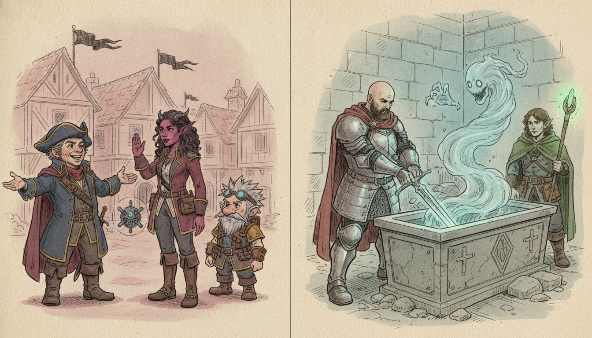
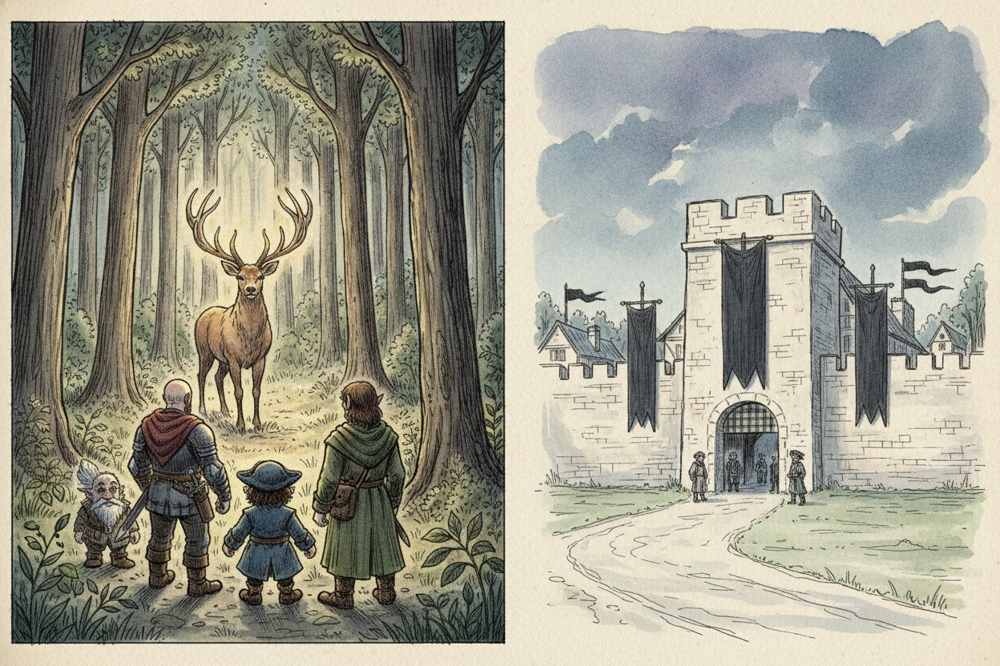
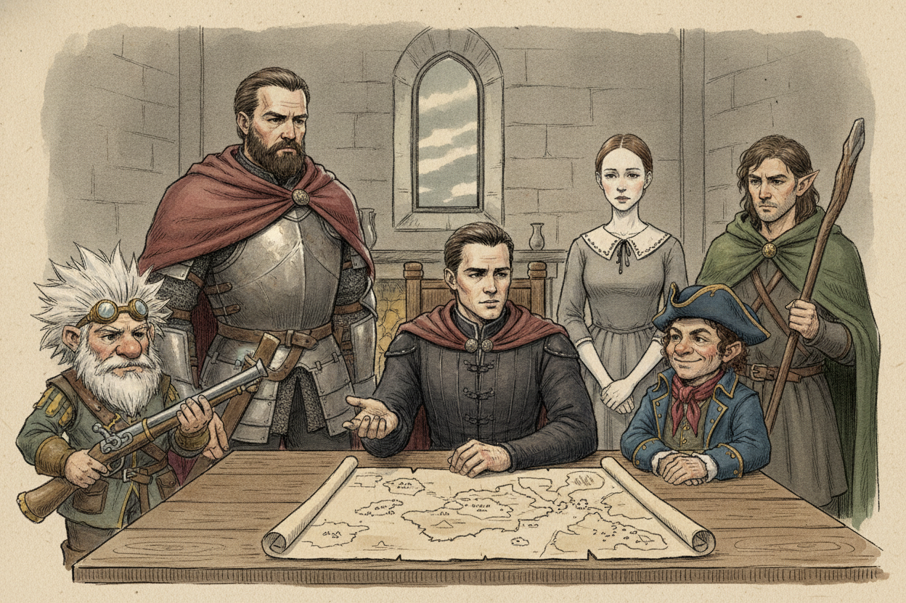
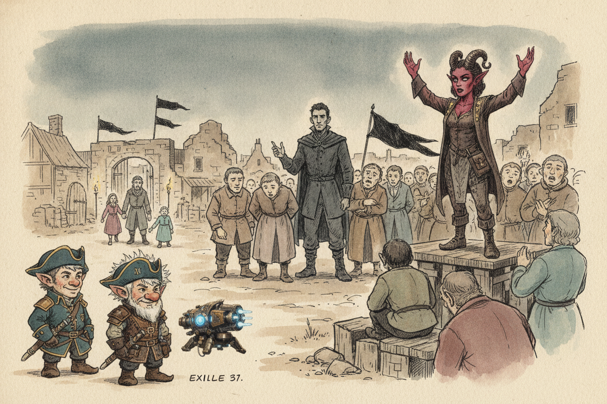
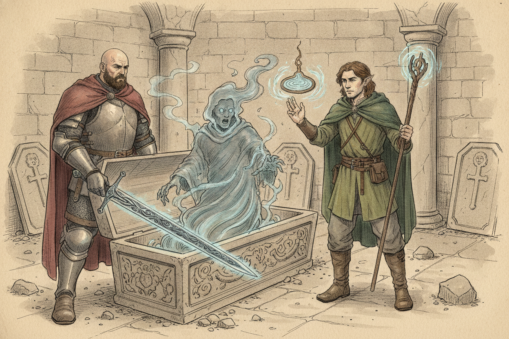

Session 2025-12-17

In brief: Back at Nightstone with black banners flying, the crew met the new claimant Corvin, learned the wider giant troubles, and split — Toz and Fiz brokered an oath with a tiefling cultist while Hal and Woz pulled a cursed sword from a sarcophagus in the crypt.
A Strange Deer and a Black-Bannered Village

The morning began outside the goblin cave where the crew had been camped, foraging in the surrounding forest. There, between the trees, they caught sight of a deer with golden antlers — a quiet omen they noted but did not pursue. With provisions gathered, they turned back toward Nightstone, only to find the village's walls now flying black banners. Whatever had stood there when they left, the place had changed hands while their backs were turned.
Corvin's Claim

At the gate they were met by Merrick, a familiar guard, who laid out the new state of affairs. With Lady Nandor dead in the cloud giant raid, a man named Corvin had stepped into the vacancy. He carried royal blood, Merrick said, and the claim was no mere usurpation. Daphne, Nandor's lady-in-waiting, confirmed it with a tight mouth — Corvin was, technically, within his rights. Her expression suggested she found the technicality cold comfort.
The crew were granted an audience. Corvin proved less interested in Nightstone's grievances than in the broader catastrophe sweeping the North: frost giants were menacing Bryn Shandar far to the north, and fire giants were digging strange holes around Triboar and the Golden Fields. The giant troubles were not isolated to one ruined village. They were everywhere.
Oaths in the Square

Corvin demanded oaths of loyalty from those who would remain in Nightstone. Toz and Fiz went down into the village to witness. Most of the gathered villagers swore plainly enough, but Aganor — a tiefling woman — drew stares by swearing her oath to Asmodeus rather than to Corvin or any earthly lord. The Delfryndel family of three refused outright and stayed outside the walls, choosing exile over an oath they would not give.
Aganor, it turned out, had her own grievance: Corvin's people had seized her house, and with it her spellcasting focus. She would help the crew, she promised, if they helped her recover it. Toz and Fiz also sought out Xolkin — keeper of the troublesome flying snake — who made no secret of his contempt for the new ruler. Slipping into the occupied house, the pair retrieved Aganor's focus and returned it to her.
The Crypt Beneath the Wall

While Toz and Fiz worked the village above, Hal and Woz pursued a different lead. A secret passage had been found from outside the walls into Nightstone's crypt — a way under the village that bypassed Corvin's guards entirely. The two slipped inside and threaded their way to a sarcophagus, which Hal pried open. Within lay a sword, finely made and clearly something more than steel. Hal took it up.
The sword's previous owner objected. A ghost rose from the stone and set upon them, and Hal and Woz fought it down between them. When the ghost was gone and the dust settled, the sword was theirs — but the lingering chill of it told Hal what he already suspected. The blade was cursed.
What's Next
- Aganor's promised help is now owed and uncollected — what she can actually do for the crew remains to be seen.
- Corvin's rule sits uneasy with Daphne, Xolkin, and the Delfryndels; whether to back him, undermine him, or simply move past him is an open question.
- The cursed sword is in Hal's hands. The nature of the curse, and what it costs him to keep wielding it, are not yet known.
- Two larger threads point outward from Nightstone: frost giants harrying Bryn Shandar, and fire giants digging at Triboar and the Golden Fields. The crew has destinations to choose from.
Original session notes (Fiz's POV)
Forage in forest outside cave, see a deer with gold antlers
Back to Nightstone, black banners flying
Talk to guard Merrick, Corvin is in charge, has royal blood
Daphne, one of villagers, lady in waiting, Corvin is within rights to take over
Secret passage from outside into crypt
Toz and Fiz go in village, Swear oath, Tiefling woman Aganor swears oath to Azmodeus, family Delfryndel family of three stays outside
Talk with Corvin:
- Bryn Shandar, frost giants
- Triboar, fire giants, digging holes
Talk to Aganor, will help us if we get spell casting focus, in her house that Corvin has taken
Talk to Xolkin, not a fan of Corvin
Get Aganor’s focus
Hal and Woz go in secret passage, enter crypt, open sarcophagus, cool sword, Hal takes, ghost appears, they defeat it, sword is cursed
Raw transcript (392 chunks of auto-transcribed audio)
Lightly chunked. Expect overlap with table chatter.
I'm now recording the session. Is it going to pick up the signal versus the noise? I hope so. There might be speaker number 6. He said the bar behind would be a podcast. When I clicked play I was like, "Oh, it's just my voice." I assumed you guys just made your own.
I made my own. It wasn't as good this time. I think it was because there was just so much combat mechanics but not a lot happened story-wise. It also did the jazz group. Yeah. I love that.
Okay, so we can kick this thing off. Everyone ready? And go! And initiate. And initiate. Roll for initiate.
Okay. Okay, you guys all start in the morning in the caves after a peaceful night's rest. The villagers are all waking up. You hear their impatient and hungry murmurs. So we did a long rest? Yes, long rested.
I'm not sure if we were going to have to. Yeah, that's always tricky with the level up. You guys are sharply aware of your own hunger as you wake up, as you've given all your rations to the villagers. We gave all of them. Did we? I didn't know that.
To be honest. But I have a foraging skill for stuff. That's great to know. Let me finish my monologue. Damn it. No, um...
While you're monologuing, it's for foraging. That's right. Okay, in the cave? Or are you going to leave the cave? In the cave. I'm just going to forage some goblin.
I feel like you asked that question and you were about to kill me off. I feel like you asked that question and said you were going to kill me off. No, just because the foraging mechanic is dependent on where you are. If you're in a place with abundant resources, you'll find more. It's an easier skill check. find some suspicious looking mushrooms Molak approaches you lets you guys know that the villagers are ready to head back to town he'd love it if you guys would accompany him but they're not gonna pressure you and that he gives you like some really like puppy dog eyes we discussed amongst ourselves We will aid you because we need to find more clues as to what where the giants came from, why they were after the night stone.
I feel like we're missing something. We need to go back. They're going back with us! Yeah! I assume the guards that we uh commandeered are going with the townstone? Yeah they're gonna they've they've they're sticking with this town.
And do we have a new goblin? Snakebat is still with you. Alright, so we have a new very squishy... We have a very diverse group of expendables. What happened to Steve Buscemi? Did he just like, keel over at some point?
Fishhook? Yeah, whatever his name is. Last you saw him, he was palling around with the Zhentarim fellow. Zhentarim? Oh, Buscemi. Old fishhook, good job.
So they're all ready to go. What do you guys want to go? I think we're going to go back with them. Let's go. Okay. Start the march.
I don't know. Did you want to spend some time forging for food? Yeah. All right. Since we spent our rations on them. How far are we from the...
Plus I want to learn. Let's get outside of the cave. And then go forage. And then what happened to Daniel? Daniel Windraven. I put Daniel in Gainey correctly.
Which is weird because I wrote my summary and I had AI clean it up and it rewrote it from Daniel to Daniel. I was like, "Oh, I must have some back" Looking it up in the Forgotten Realms. And then you're like, "No." what we discussed when I went on that trip with him what his take on that evil was I remember he said, oh this is some great evil I don't remember if he was motivated to do something about it he just wanted to learn about it that's all, stupid acting alright, so enough of him there he learned ivory towers Slime. Slime. Ooh, evil slime. Interesting.
He didn't seem too keen on wanting to take care of it. He just wanted to write a paper on it, so he can get as many citations as possible. So I think the relevance to him was that he was part of the Emerald something-something. Emerald Enclave? Alright, but he's gone. Okay, so, um...
You're gonna forage for some food, so you have to spend an hour. And, um, anyone who wants to forage can also forage. So you roll a d20, add your survival bonus. You're making a survival check. Perfect one. 10 plus 6.
Got an 11. What do we need to get? You actually need for this a 10 or higher. I got 15 including my survival bonus. It's your survival bonus. I actually don't see survival on the list of skills.
Is it called? It is. It's on there. It should be. Oh, that's in the bottom. I'm sorry.
Yeah, I got it. 16. Plus 0. So everyone's defeated? Yeah. Okay, so your guys' foraging leads you past this big...
So this cave system is like part of this big hill. And you guys have gone around this hill into the woods a little bit. And you've walked into this glade. And when you enter the glade, you see this great big elk. And it's got antlers that appear to be made of gold. And when you see it, you get like a total sense of serenity and awe.
I'm ready my chat one. Serenity and awe. Right. Just the antlers appear plain or do they have like any kind of like decoration or anything? Like regular deer antlers but made of gold. And it's an exceptionally large deer.
I recognize that this deer would feed a lot of people. Nothing else other than the antlers look and the size. No like two heads. No. No three eyes. Just some golden antlers.
That's it. Is it gold? But the awe that we feel, is it like a religious experience or like, "Aww, that looks delicious?" Make a religion or a nature check. Okay. But it has golden antlers? Golden antlers.
Arcana check? I'll tell you some information on an Arcana check. I got a 10. I got a 10 on my young. Does it look good? Arcana, I got a 14.
14. So there is something innately magical about this deer. That's all you can really tell, but it's not your domain. It's something to do with nature. It's not something you can science about. Does the deer appear to notice us?
Yeah, it locks dead eyes with you. It's ready to bolt. So I'm giving all this exposition, but it's really just like a split second time. Can anybody charm this or talk to it? I have an animal friendship and speak with animals. There we go.
Did you spell something? Did you start a podcast with this animal? Can you play one of those on a short rest? Yeah, yeah. That's cool. Yeah, that's what it is.
Should we speak with it? Yeah, let's do it. Okay, all right. So speak with animals, that's it. It's a cast. So make an animal handling check real quick.
The d20, right? Yeah. So you can tell that the slightest wrong action will make this thing bolt. Okay, so just keep that in mind. Like it's ready to run as you're doing this stuff. I guess I was going to speak with animals.
Okay, so you can speak with animals. And what do you say? Hey, what's going on? It's pretty magical looking creature here. Okay, I'm going to have you make a persuasion check, but we'll use your wisdom instead of your charisma. Oh, thanks.
Oh, wow. Okay, so whatever your character says is a little bit more elegant. Hey, what's up? Speaking that this creature understands and you instantly calm it and it doesn't pull. It stands there for a moment and watches you and says, why have you come to this place? So I think I want to take the survivalist tact because we've got a lot of people that have been injured and hurt and everything.
And we are looking for food and we came across this guy. But, you know, obviously... You're saying all this to this deer? Yes. We were foraging. You look really big.
What are you trying to convey to the deer? You don't have to roleplay it. You can tell me. We are hungry, we're looking for food, and we're going to live in the deer. No, no, no. We're looking for food.
We're here to survive, to save some villagers, right? Right. And there's some evilness in that cave. Right. You want me to tell them all that stuff instead? It's probably...
This is between you and the deer. Don't listen to that. Oh, okay. All you hear is the deer noises. You appear to be a magical beast. Yeah, it's like giving off unicorn vibes.
The deer doesn't say anything, but it turns and just slowly walks and then pauses, looks back at you, and then keeps going. Pauses, looks back at you. So you follow it, it leads you a little ways into this great big orchard that's filled. I mean if you guys can follow, whether you follow or not. A bit behind him. And are we, did we tell the villagers to go home?
They're all waiting in front of the cave system. In front of the big cave mouth. Like hoping you guys bring back food. So yeah, it leads you to this big orchard where there's these huge trees and they're all growing these massive apples. And so you can tell there's like enough apples here. Basically you're going to get like double your origin amount.
So everyone roll 2d6. 6. 6. So that is the amount of 6 pounds of food that you're able to acquire from this. I got 11. 11 pounds of food.
You both got 6. 2. Ok, well, just take that. 12, 14. 11? Yeah.
6 pounds. 25 pounds? What's that? 25 pounds total. 25 pounds total. That's a lot of food.
Yeah, so there's 27... 24 villagers plus 3 guards. 27. Like 3 apples each. So 3/4 of a pound per person? Oh no, 28.
That's a decent amount of food. Yeah, that's enough for like... Basically the amount you need is 1 pound per day. So what's that for the day? Alright, we don't have to worry about food. Yeah.
But the villagers are all like Well To resolve the thing with the deer The deer Then does run away As you guys collect apples and things But it does Are we in a giant orchard? Are we in a giant orchard? Giant orchard? Like these apples are huge Were they Are we in a giant orchard? You guys feel a sense of total serenity in this orchard. It doesn't appear to be disturbed by outside forces.
As the deer departs, it leaves you with a feeling of a blessing, and you guys all gain inspiration. That is marked... I have heroic inspiration? Is that the same thing? Huh? Heroic inspiration?
Basically what that means is you can expend that on any dice check to give yourself advantage. Okay. It's a one-time use. Okay. You just accumulate, right? I already have one inspiration, so now I have two inspirations.
Uh, no. Make sure you use inspiration, right? You'll OD on inspiration. I'm inspired. I'll just keep my one inspiration then. Don't we all have one inspiration?
I don't think any of us used it. I don't think I've ever done anything inspirational. Oh, I think I didn't remember. I gained it when I tried to save the guy falling off the drawbridge. Shaping the water, but then he hid his space anyway. Now I remember.
Well, I'll remind you to use it. What does it do again? You can expend it to give yourself advantage on any dice check. That includes attack rolls. Yeah, you can also use that after you roll to give yourself another roll. Does that work on like disadvantages to make even injuries?
Yeah, cancel out of it. If you ever have disadvantage and advantage, it doesn't matter how many instances of either you have, it just negates to a regular day. Alright, so we feel all good, we're sitting in this orchard, pretty happy, we've got a bunch of points. Yeah, and basically every villager has like one big apple. We're gonna smell flat. Okay, good.
Okay, when you guys... I just take a short rest. What's that? You need a short rest, do I take a short rest? It's up to you. I think that's the spell slot.
Well, you don't gain spells slot, I'm going to short rest. Don't you? Let's hear a warlock or something. I knew there was a kiss. And then I think wizards and druids, I don't know if torturers get a feature that... They can recover one spell slot on a short rest.
Basically, well, they have a thing that they can use to recover a spell slot, and then that recharge them on a short rest. Anyway. Okay, so when you guys arrive back at Nightstone, the first things you notice are there are large black banners draped on the guard posts, and one across the gate. And these banners have a winged silver snake against a field of black. Sounds familiar. And the gate of Nightstone is closed.
So we were coming from the north, right, because we went up to the north. And the north is where the giants have burst through the wall. Did we see if the wall has been repaired? So you could see actually that there was like a stone blotch over the wall. A stone blotch? Yeah, it looks somewhat unnatural.
A blotch? Yeah, like a stone, like a patch made of stone. Does it appear to be real or an illusion? You'd have to get a close-up to it to check it out. So we're coming from the north here? Yep.
And then where's the patch? There, on the north spot. So, do you check it out? Uh, yeah. Make a Narcana check. Or, uh, get some sort of stone if you're at the war...
Nat 20 on that one. Nat 20? Wow. Okay, so you actually know this was the effect of magic. It was actually a specific spell that you're aware of, known as Stone Shape, which is a spell that allows someone to shape a five-foot cube of stone into, you know, magically into anything they were to do. So, somehow this has been magically patched by somebody casting the stone-shaped spell.
So it's not a blue shape, it's real. Yeah, it's real stone. Do we know anything about the level of mastery of someone casting this? Does he? I'm not gonna... I'm wondering if you, from your nat 20, do you know the level of mastery that it took to cast this?
Yeah, I'd say with that sick dice roll, the person who cast this doesn't seem to be that familiar with the spell. Like maybe it was like a scroll or an item that allowed them to cast this. Alright. He's a little more base I think. On the bottom out? Yeah, that's the chief headline film.
And you guys can also see guards standing on the guard posts. Just the ones flanking the gate. No one was watching you guys go back. So we got like our party is like 30 villagers. And we're walking into... We're walking into basically a nightstone that has been claimed by those people we should have killed.
So when you look up at the two guards flanking the guard tower, one of them you recognize, one of them you don't. One of them is the guy that you were talking to in the kitchen in the inn. Sulkin? No, not Sulkin. This guy didn't give you his name. I don't think so.
But he actually calls out, "Oh hey! It's you guys!" You say we did help. Oh! Wow! You really did it! You saved all the villagers!
We did! Holy crap! Can we come back in? Eh, I've been ordered not to open the gate for anyone. For anyone? Like who?
Well, they're sort of a new boss. Zulkin? No, not Zulkin. Who? His name's Corvin. Corvin?
Yeah, Corvin. Corvin? Corvin, yeah. He's a real... Real in charge. Corvin Zulkin?
Oh yeah, yeah, yeah, yeah. He's actually noble blood. Noble? Corrigan is the new man in charge. Why did he not want you to open the gate? Well, I forgot he's yelling down here.
I don't know if I'm privy to say, but I could ask him to let you in. I mean, I don't imagine he wants to leave all the villagers outside. Yeah. What does that mean? He wants to leave some of the villagers outside? Is he interested in someone in particular?
What? No, I just mean that... I don't know. I'll just go ask him. Yeah, sure. Let's go.
Let's ask. He will also ask. What's his mullick? Does mullick have an opinion here? Oh, he's going to get the boss. Do you still want to go back in here?
Of course, it's my home. Do you know this port? What else are we going to do? No, I don't know any. Orman? Orman?
He said that last time he said that there was more support coming for certain people. Last time we were here. Yeah. So we're supposed to be other people. I think we play it like we're harmless. He's got two more things.
He's got some hungry mouse to feed. Just ask them. Yeah, ask Corbin. After a bit, he comes back on the couch. All right. We're going to let you all in.
But you've got to leave your weapons. And the goblin can't come in, of course. Oh, I'd be traveling with a goblin. Ridiculous. It's pretty nice. That's racist.
That's good. Yeah. Okay, and you're all going to have to pledge an oath of loyalty to the Zentorum. What does that involve? Who is this? Can somebody say it?
Corvin? Yeah. He's the new High Steward of Nightstone. It's all buttoned up. It's all legal. Very official.
A man of noble birth came into a town that's been abandoned, and he pointed himself high steward. Not much else to say. I talked to, what's his name? Corvin? Corvin. We don't know his name.
What's your name? Merrick. Merrick. No, sorry, the guy we were handing the genie bottle to. Moloch. Moloch.
Is anyone of noble blood in the village? There's Daphne, the one you rescued. She meekly kind of raised her hand. Yeah, I guess I would technically be the high stewardess as a lady-in-waiting. Daphne? So what are your thoughts on the situation, Daphne?
Well, I think he probably does have a good legal claim. And as long as he doesn't harm me, Of course, under the laws of Waterdeep, it's a high crime to harm a noble. I think he probably is within his legal right to appoint himself as high steward. Damn. Looks like we're screwed. I would rather not leave our weapons outside and go inside.
I mean, the villagers can go in without us, technically. And we could, I guess, scheme with them to figure out where to go from here. If anybody comes in there, are they allowed to leave? Who are you asking? Sorry, I'm asking the guy at the gate guard. Oh, of course.
We're not going to hold you here. It's not a prison, unless you break the law. We don't want to really just leave our weapons laying around down here, though. Oh, no, we'll take them. Can we give them back? Yes, we'll keep them here at the guard tower.
We'll put it in like a big kitchen. Give it back. Uhhhh... I don't know. We let the villagers go in, but then we maintain some people. We need to come up with a plan.
I mean, we can get the lay of the land and we might decide... Well, this is the way it is. Do we trust our little goblin friend? We're just gonna want the weapons off inside. I don't know, he's a coward. I can take something a little bit.
Sell them for drug money. Where's Steve Buscemi? It's our friend Steve still in there. Don't know any Steve. Oh, Fishuk Pen? Yeah!
We call him Steve sometimes. Yeah, he's really ingratiated himself with our group. Real useful guy. Is he Corbin? *laughter* *laughter* they can tell us we go inside without our weapons or do we ask for our answers? it's if we ask for a conversation outside or like even from the tower right with whoever whoever they feel safe right yeah are there provisions to buy inside the town Moloch whispers to you there is another way in the town cause you and Nick speak a little louder What's that?
cause you and Nick speak a little louder there is another way in the town there is another way in the town wait, what's that? I don't want everyone to know about it so he takes you off to the side I don't think we're trying to speak in we absolutely aren't No, it's not me. Just letting you know it's there. It would be nice to be able to get in there. If we let the villagers go in, they're all going to be slaves. And what, are we just going to move on with their life?
They seem fine with that. They don't know who they're walking into and don't serve it to. I think they do know, don't they? I don't think so. Most of them don't have weapons. What do we know?
You know the Zentaro. Anyways, so how do we, what's the other way? They're like one of the high houses, right? They'll take care of us. I'm sure of it. That's what they're saying.
That's what Pollock says. He's wearing a "make nightstone great again" hat. So we're saying that we know more about the Zentarium than they do. Yeah, you guys have been on the seats. We've been on boats. What's the other way to get into the nightstone?
I think we just let them know it's real. Why don't we just get the information on how to get into the nightstone if we wanted to? It explains. It's a... So there is a secret way in that leads from outside the town in through the crypt. So you guys may not remember, but there was a graveyard and a crypt in Nightstone.
The Nandar Crypt. And there's a passageway that leads a tunnel into the crypt. It goes underneath the water? Yes. Can we explain who the Zantara are to Moloch, like all their reputation and you know, how life might be difficult for them under their rule. Just get his reaction.
He looks dismayed but he's also like, what else are they going to do? Where are they going to go? This is their home. The world is dangerous. There are giants. You guys going to take care of us our whole lives?
There are other health facilities. We could all go to Waterdeep. We could just kill everybody. We'll just be homeless living on the streets of Waterdeep. Is that any better? We are level 4 adventurers.
We could just go in there and kill everybody. And give them the town back. That's what we want to do? They don't seem to really want the town back. The village by the villagers? Yeah, the villagers seem to be like, I do, says Daphne.
I don't know if violence is really the right way, but if it gets us our town back... But did you say violence is the right place? It's a solution. I'm not, I don't want any more villagers to die. So for the royal claim to have been valid, you would have had to have abandoned the town. But is what fleeing from a giant attack considered abandonment?
Do you think your royal claim is invalid? I think you make a great point and it's something that could be argued to the magistrate in Waterdeep Daffy hears an axe She goes like, "Pipe, choose your champion." Alright Hal. My eyes get just shoved in. Okay, so... What are our options here? We can send the villagers in and we can peace out.
We can send the villagers in and sneak in ourselves with our weapons. without our weapons. I'm less excited about that. I don't have any magic. You are, but the rest of us... We're right here.
Actually, I don't know. I see some injustice here, and I would like to not walk away from it as a paladin. Two of us could go in. You two could sneak in. What's your weapon? Ooh, what if I went in with my weapons, without my weapons, left the...
Like what if we split up? Two of us went in, me going in there without my weapons, and you guys could just... We bit our little ones, right? You guys could sneak in, you could sneak my weapons into me. That's true. We could do that.
Split the party up. I always feel like this is a fun idea but people don't like it. Party up? Yeah. That's a bum. At least we're kind of in the same decision.
I like the idea though. Maybe. Okay. Yeah. It's a bag of holding. It's a pocket dimension.
Oh, it's a little bag. Alright, so we'll have our little goblin friend come with us in the crypt, I guess. And everyone else will go, sans weapons. So who's, are we splitting up? I'm okay with it. What did the rest of the party say?
I have a skillet called Calm Muitions. So if it gets crazy, I can maybe... You just calm everybody down? It has a 60 foot radius. Pull out a bong. Yeah, across our legs.
That's a drum circle. So are we gonna split up two and two to go with the villagers and weapons? Yeah. That's a reasonable idea. We can go into Legends. We don't depend on Legends.
Right. Is there any reason to believe that I would have trouble going... Anybody would have trouble going through the... I'm super-chan. Passage. How about you meet your...
No, you're asking Moloch. Huh? You're asking Moloch? Yeah. Yes. There's a heavy door.
Oh, okay. That's a gun, but I'm asking you. It may be difficult to move, especially if you want to do it quietly. I also think you can just go in. We're not on anybody's beds, and we help them and just ask questions. Well, I've grown really fond of our expendable goblin.
So you want to put it in two? Well, I don't know. I don't want to end up on the inside without weapons. Because we're going to have to fight. Are we? Well, yes, because I'm there.
You have to. You've got a real life history. So... I like the idea of squirreling in the weapons via bag of folding. Yeah. I don't know if I can.
I think we have the strength to do it even without the bag of folding. The two characters just to hold a couple of weapons. So you guys go in. So Moloch said that there's a heavy door that needs to be moved underneath. How about the Paladin in our tank here? He acts like the tank every time we win a battle.
But maybe we should rank him. We're the strongest of us. I have a high armor class. Yeah, so here. I don't. I have an AC of 18.
I should go in sans weapons, that's fine. You can go in sans weapons, right? So we will... Okay, I think we're going to do this. We are going to go into the village, sans our weapons, with the villagers. Them two are going to go in the crib with the goblet friend.
And our weapons with them. I think. Has everyone agreed on that? Yep. Okay. Okay.
So here. These guys are going to wait outside for us. We'll come in and... Okay. Sounds fun. Open the gate!
Open the gate! Remind me, if I'm a class, is it because of the armor that I'm wearing? Or is it like the chalelia thing? It's your armor and shield. Armor and shield. Chalelia, yeah.
Okay. I'm just making sure that I'm not giving up two points of armor class. Which I'm not. So we're going to 18. Okay, we are officially split. Okay.
The gate comes open and there's several of the Zhentarim guards forming a semicircle around the gate entrance on the inside. And with them is a tall, young-looking human with this ridiculous black robe that has a tall, spiked collar. And he's standing there with his arms behind his back, sort of inspecting what's going on. He's going to whisper commands to the Zentarim agents. All right, everyone line up! And they start having the villagers line up.
And one by one, as the villagers enter the town, they have the villagers swear an oath to whatever their god is. Well, so when you guys arrive, you guys line up, get in line. What is their god, in curiosity? It's different for each person. So when they get to you, they ask... The individual person is god.
Oh, okay. And they're making a swear to their god. Oh, you're swearing to your god, fealty to them. It's like swearing on your mother's grave. You're swearing to your god, fealty to... Cobain.
Cobain, what's his name? Chris Corbin. Not to betray the Zhentarim. And as long as you are in Nightstone, that you will respect the laws and obey the High Steward. Betraying the Zhentarim, it just means, like, wow, you're in town? Or is it like...
Is it a fealty thing, or is it just a... Are you in line? What would be my internal understanding of this okra? Well, do you wear any religious symbols? I'm a man of science. When you guys see this perception, do you get in line and go through with this?
Well, I want to know... Because the people are moving through. Yeah, yeah, but this is more of a larger question of like, what would be my understanding of taking this out? Right, like, in the world, are they like writing this down in a book and sending it out to all the Zentarim? So, if you're not like particularly associated with any deity, then to you it wouldn't really matter. Okay.
For most people are. Most people, it's like a big deal. And even like swearing to another god could be seen as like blasphemous. And a lot of people just wouldn't do it. It'd be very taboo. Okay, there you go.
All right. But if you're not like a religious man. I don't think so. Or if you're sworn to like a god of deception, then that kind of thing might be okay. Because some gods might even pose as other gods at times. I mean, I never thought about which god my character would swear to.
I don't know if that makes a difference. One of the sea, probably. So there's multiple gods of the sea. Would it be like an... So one of the main ones is Umberlee, who's known as the bitch god of the sea, who's an evil deity. There's a...
There's a... There's a... Yeah. But that's what they... That's not me. That's the lower...
It's a different time. I didn't make that up. I didn't make that up. If it's evil, I would say Umberley. But if it's anyone else, I would say you can just... figure that out some other time.
What question you gotta ask yourself? Just make it the deepening. Just say a square tune. Cross your fingers behind your back. Neptune. Yeah.
Yeah. I mean, you can do that. If it's Neptune, then we'll say Neptune is one of the gods in this realm. There's a lot of gods, so... TBD. Figure it out.
I do it. I go through the motions. I swear fealty to my god. My main man, Corbin. I use our zone of truth. A good, like, um, lore, uh, accurate, like, to the world that we're playing in for you, if it's, if you would be more aligned with the good, would you be more aligned with the good deity?
Yeah. Like, someone who's, like, going to protect and nurture, or someone who's going to, like, give you power and, uh, conquest. Yeah, so sure. Like, good. Yeah. Okay, so maybe Valkyr is the, like, one of the gods of...
You can figure this out. I don't want to pigeon you a hole in a certain god. I just... If it's evil, it should be umbrother. That's the only thing. Vekna, that's actually a real thing.
Oh, damn. I mean, the show is based on the D&D. Yeah. I thought they made up everything. No, Demogorgons are in this. Oh, really?
Yeah. Vekna's really a... Yeah, Vekna's a... I forgot how it started. What? Beckna's a lich, which is basically what Voldemort is.
Voldemort's a lich. Like, you place your soul into a phylactery, and then that way you can never die because your soul is, like, placed in that object. But that's what the... I go through the motions. Okay, go through the motions. Swear it.
And you... I'm a man of science. Nothing to be. Yeah. But you don't have any problem lying about it? Not to, uh...
these count rolls. Okay. Say I'm a fanatic good kind of guy. As long as it comports with my own moral talent. Okay, and then you guys just stay outside. We're just outside.
Snick bat. I would say we gave all our robins to that. What are we doing with Snick bat? We're playing bocce ball. Playing long darts. Yeah.
Let's see. Will someone roll a D8? From which pair? Yeah. Just anyone. Anyone with the A.
Whoever wants it. Whoever does it first. Three. Three. Okay, three villagers remain outside. Huh?
Three villagers remain outside. Okay. Why? They don't want to go back in? Because they don't want to go back in. Yeah, they think that that's a worse fate than staying outside.
Okay. Are any of them meaningful or just random? Let's say specifically... Meaning would we miss them if they die? I do actually have an inventory of all of the people. some of them so I'll say one of them is that tiefling woman she's abandoning all the children that's fair yeah you're right better than goblins I forgot about kids the kids ruin everything I mean that's fine.
She just has a particular attachment to her deity. Well you see her really struggle with it. And kind of mumbles. Sorry kids I just can't do it. Actually so she is in line right ahead of you. And you hear her give her oath.
That she swears to Asmodeus. Asmodeus. That's not her deity. Make a religion shot. Just these two. 11.
15 plus. 18. Yeah, you know of Asmodeus, the god of the nine hells. God of devils. Wait, the babysitter woman? Yeah, the babysitter woman.
You get a point of fear. Do I get the sense she's being untrue? You said we know her? No, we don't know her affiliation. Well, she has a tiefling, so there's that. It makes some sense.
Is there the ones that are kind of like hell modern? You got the horns. Yeah. She looks devilish. She's got red skin, eyes with no pupils, a tail, horns. So I just think that makes sense.
But you are the... ...previous... ...from heaven. Don't make me angry. Okay, so the people who stay outside are the... They are the Delph-Frindell family.
What's that? So there is... They are a family of humans who stay outside. They are Zalf, a 40-year-old man, his wife, Elise, and their oldest son, Darsen, age 17. Two of their family members died in the case. So they were a family of five and appears to be used to.
Okay. You said they were, what was their family name? The Delfrindell family. D-E-L-F-R-Y-N-D-E-L. And Zelf and his son Darsen looked like strong men. The son Darson or his daughter Darson?
Son's Darson. Darson Dolph. I'll take my chances on the road before I give my family up for those. Okay. Speaking of, what are you guys doing? Traveling with Waterdeep anytime soon?
Sure would be convenient for me. Going north on that long road to the north? Possibly in the future. A couple of our party members went inside the town. We're just gonna hang out here and see what... Wait for that, basically.
And to be honest with you, we're gonna break into the town. We know a way in. And, uh... Well... A little too honest. He's getting down the town of school.
He's got you on the back. We're gonna see what's going on. but everybody's okay inside. We're gonna break in there and everything is good. We're gonna get out. And if things are not okay in there, we are gonna probably race to hell.
So, if you want to wait for us here, we'd be happy. Or if you want to join us inside? I'll tell you what. There's a farm that I know about outside of town. So if you take the road, Nightstone Road. Okay, I got those pretzel legs and the nachos.
Good. Do you want me to take care of that basket for you, Nick? Oh, sure. Could I maybe order another one of these? Yeah, I got you. You still have your top of it.
Yeah, it was Nick. I got you. Yeah, thank you. Half of these are Cool Ranch. Oh, wow. Yeah.
You take the main road, the Nightstone Road. So you're giving us directions. Nightstone Road down to the main road. Okay. There's a trail that leads over the hill. You go over the hill, down into the valley, and there's a farm there.
We're going to go see if they'll keep us in for a while. How long of a walk is that? Half a day. Sorry, what was that? We were just talking to you guys. Basically, the way you guys came up the road to Nightstone, it's way back down.
He described there's a trail that leads off the road and leads to a farm. So too far. This family's going to go to this farm. This way? Yeah, it sounds like a great dress. We are now committed to it.
I imagine you guys can get rest from the need. We're going to get this. What is that? It's fine. No, no, no. They're going to the farm.
Yeah, and they're supposed to go find that one. We're done, right? No, no, we're not committing to anything. Is that what these people think? You just let them know in case they want to help them or need to rest at the farm. We're going to continue to hang out.
They're going to wait at the farm while we take care of them. No, I'm just going to eat off. You could have. No, no, you're not going right now. Right, that's what I'm saying. We have sort of made a...
I think so. I think he was just letting us know. Because he told them that we were planning on doing some crazy stuff, and they're like, "We're gonna go over here, we need to come over there." I invited him to wait for us here, or to join us. And he offered a third option of, "We're gonna go to this farm while you cook, hit yourself kill." Yeah. So, like a little flashback to me. While we were walking to the town, I was interested to hear from Malik what he thinks of the Emerald Onkling.
What he thinks of them? Yeah. Like his opinion? Yeah. What does he know of them? How does he feel about them?
So he thinks that they're generally good. Like they do good things. they don't care as much about like civilized folk right that's not kind of what they care about but he does think that they're generally a force for good in the world as I recall Daniel was like didn't didn't have entirely positive feelings about the villagers so that more reflects the resentment of the Ardee Elves who have had a long standing feud with people next time Okay. And Daniel was part of that village as well. Yeah. Okay, so that's like a separate group, but he's a part of it also.
Yeah. And does he know this Daniel Wind Raven? He doesn't know, personally. Okay, so back in town. the uh you see that um the noble looking guy corvin thank you It's kind of a near to the paper. Yeah, so he's talking to villagers, and you see they start like gesturing towards YouTube.
Putting at you, and then Corbin. ah sorry gotta stop feeding the gift corvin corvin's actually in character he's just like eating you rescued the builders Terrific. Splendid. Splendid. Welcome to my village. How would you like to make yourselves useful?
We're really just open for information. I would have to parlay for information. I've the tiefling woman has a look. A look? Mm-hmm. Of pure hatred and anger.
About the house he pointed at? Yeah. That he's taken off. Is it not the keep or whatever? No, it's because the... You can see that the bridge is still damaged.
And the keep was like a huge boulder fell through it. So it's in pretty bad shape. You can see there are people around, busy trying to repair things and putting the village up and starting to bring it back to better. But it's still pretty ravaged. A lot of the houses are destroyed. But the one he pointed to was pretty pristine.
Just a small cottage. As you guys pass by you see Zolkin pushing his room. So he's nobody? He said nobody now. Can you give him a nod? Where's your little snake going?
He left McKellar. What? He left McKellar. McKellar took him. McKellar left. I think we were just interested in, uh, if they know anything about the giants.
Ooh, giants. Yeah. That big boulder in the keep over there. Yes. You might have noticed. My men here told me that, uh, some travelers by came and explained it was giants.
How do you know the giants won't come back? Uh, well... How do we know giants aren't willing to drop boulders out of the sky on anyone? Were you headed here specifically? You were coming to Nightstone? I was coming.
on vacation and look free town it was a pretty good deal it was an excellent birthday so you don't know anything about these jokes the other jokes were telling me that you rescued them in caves that's right that's true That makes you some kind of hero. You say something. I would never say. I offer you a high position here if you would like to enter in my service. Unfortunately we are... Zolkin, if it was you he spoke of, said you also helped defend the town against poplans and orcs and some big scary wolf things.
You're in my debt. Would you like to take any of the villagers as your own property? You said we're in your debt? No, I'm in your debt. Okay. That's better.
Is that not what I said? That's not what you said. It's these delightful... Is that Jim Juice? Yes. Jim Juice time of year.
It's the town special thing. All right. Now we have all this labor. We're going to do so much good here. So much good. This is going to be the spot.
We've got all the woods there. We can just hunt and kill and cut down all the trees and sell them. I don't think the elves in the area are gonna take too kindly. What can some elves do? I wanna get a sense of how many centaurum there are. Not that many.
So, there's like, I think you guys left, there was seven, maybe, ish, six. There's maybe like a dozen more. And a few of them just seem to be his personal servants. So, it's not like teaming with people. There's like, make a perception channel. Just that count perfectly.
See how specific of a number all of it is. Come on. I think it's a 13 plus... I can't see well. Plus... 18.
18, okay. There are 12 guard-type figures, and then another 6 non-combatists. 12 people who get to trouble. Yeah. You also get a sense that, I mean, basically based on your power growth over the last couple of days, none of them are going to give you that much trouble. Twelve of them, that could be a lot.
Yeah. And this guy is also an undone. But he does appear to be some kind of spellcaster. Spellcaster? Spellcaster. Or spellcaster.
I casually mentioned, was that your handiwork that fixed up the north wall there? Oh, yes. What's this? and he shows you a rod. Yeah, lucky. What is that?
Why am I telling you so much? What if you're such good friends? I do feel amicable towards you. You've done so much. You brought me all these people. You seem to be some sort of spellcaster as well, which I respect.
I'm a man of science. I too am a man of learning. Pulls out his spellbook. But perhaps I should I'm in trouble being stern. I just feel so friendly. If you wanted to know more about the giants do you have any suggestions depends on where we might go.
So, Giants. Well, um... I can tell you what I've learned and what I've heard recently. Um... But...yeah, I guess...why not? Everything good out here?
You guys need anything else at all? No, I think we're good at the moment. Ready? Sounds like fucking nerds. Why not? So, I've heard that up near ten towns, they're having trouble with frost giants.
Up in the town of Bryn Shander, I don't know if you've heard of it. What? Bryn Shander. No? Yeah, all sorts of trouble with frost giants. Nobody's heard of frost giants in those parts in decades?
Centuries? And, uh, out in the Central Valley, near Desarin and Tribor, there's been sites of fire giants. Apparently looking for something. They've been digging great big holes. and then of course all the hamlets are uh you know I don't know getting uh seeing uh hill giants but who cares about those folk right yeah yeah brother invite him offer or get a drink with him in the pub or something I should do something to talk. Cut over to you guys.
You guys are outside. Yeah, what is our goal? I forgot that we were still doing that. We probably, before we separated, we probably had a plan to meet up. Okay, what was, that's fine. What was your plan to meet up?
That was probably an oversight. What about? So before we separated, we must have made a plan to meet up. Was it that you guys were going to come back out, or we were going to come in to meet up? On your crypt. Yeah, you're going to sneak into the crypt, right?
Yeah, I guess we come to the entrance of the crypt on the town side. Yeah. And that's where we meet you to reconvene. Or we will meet you to reconvene. We will meet us, okay? So what do you guys do in the meantime?
Well, there's still like a whole day to learn, basically. I assume your plan is to come in at night. Yeah. What could you be doing leaving here? uh you guys find the entrance to the place that he told you about oh yeah that's a good call let's go find the entrance to this uh yeah okay so um there's a basically instructed you where to find This is basically this old well. And the well is covered up by this big heavy piece of wood.
You move it off and you see there's a ladder that leads down the well. We're still in the middle of the daytime? Yep. You want to go first or do you want me to go first? Lead the way. down first.
Okay, so there's a ladder that's leaning against the well on the inside of it. So once you get over the the wall of the well you can climb down the ladder. Okay. As you get further down the ladder you notice first with your feet and then with your hands that the the ladder is starting to get sticky. Okay. How dark is it?
Can I see? It's completely black. Once you get down where the ladder is getting sticky, there's no light at all. I'm still on the ladder. Yeah. Okay, so this is pretty far down.
Yeah. Bust out my torch. Bust out your torch. Can you find one-handed? No, I'm just fine. I can cast it on his arm.
No, that's fine. I can. Yeah, so with the illuminated torch, I'm guessing you're first, looking down the well, you see that it becomes thick with spider webs. Okay. I knew it was snakes. Now we said that.
Okay. You're right behind me, right? Alright, so we are, so I'm going down. This is why you always split the fire. Huh? This is why you always split the fire.
Yeah. So I'm continuing to go down. Can I use the torch to burn the spiderwebs as I go down? So that's what I'm doing. So the spiderwebs get thicker and thicker as you go down, and you're having to actively catch through them. But you can, and you feel them stick on your hand, but it doesn't hurt you.
You're not stuck in them. Okay. Cut back to you guys. We're still talking with Corvin. He seems just like delighted to just have someone who's not like a guttural bandit to talk to. Do you mind if we get something to eat?
Maybe something to drink? Oh, of course. We've been out in the woods for three hours a day. There is a bit of a smell. There is a bit of a smell, but... A bit of a smell?
Yes. In the pub? On your persons. Oh, yes. A bath would be nice, yes. Sure.
Great. There's some houses if you want. Just any house that's available, feel free to claim it. I'm planning on rounding up the villagers in the barn and maybe making some bunks for them or something or they can sleep in the hay. I'm not sure. We'll figure out what to do with them.
Sure, the inn's in pretty bad shape. There's a big boulder that went right through the middle of it. So, you know, but the kitchen's still okay. There's a couple of rooms upstairs. Some of the men are sleeping there. Well, I go to one of the houses he pointed to, use the facilities, and return to the eatery bar.
Okay, so he has his servants, like, prepare you food. Yeah, he's willing to kind of just entertain you guys as his guests. Alright. I guess we're waiting for night. Yeah, we'll wait for nightfall. Okay, if we stay here for a day or so?
Yeah. After a while, I will assume that you're going to be offering some services. Spell casting or bringing all the villages back. Saving your men from walls. those are worthy deeds and I suppose you can perform more worthy deeds okay coming back to us still going down down the ladder clearing out the clearing out the spider webs with my torch checking the spiders are in here realm of expertise Okay, so you're ready for, you know what's coming. What?
You know what's coming. You know what you're walking into. A spider fight? A spider fight? Yeah. You know what makes a spider fight.
*laughter* Okay, um... Alright, eventually you see it. You see its great big ugly face down at the bottom of the well. How big is it? Very big. Its head is about the size of a human head.
Its body is a lot larger than yours. Okay. And you see it rearing its head back like it's about to do something. So roll initiative. I'm on a ladder. I got a 9.
Meanwhile, it rolled with one. Comfiest chair in the end. By the fire. I got a 1. A 1. I got a 9.
Okay, the spider goes first. and it blasts a huge blob of web up the well. So this is just single file? Can we both attack it at the same time? You guys can figure stuff out, but yeah, you are single file. He can't move past you.
Well, he could move past you technically. Could he get attacked? It would just be difficult terrain. Okay. But the web hits you, so... and it's actually an attack roll.
Oh, so actually the web spreads around the sides of the well, but it doesn't get on you. Okay. So we miss this. Question. So they were coming in at the rendezvous time, like at night, and so we were going to the front of the crypt to wait for them. How far, how distant are they from us?
Quite a ways. So you wouldn't be able to hear any of this. They're just going down. We haven't yet gotten across. Right. Yeah.
But there's no... It's so far that there's no chance that you can hear any commotion. Also, at the crypt, the place that you've been instructed to go, there is a huge stone door blocking the way that would require an immense amount of strength. Not that you can't move it. Magic. But it is very, very heavy.
So you're next. Okay. I'm sticking it in my weapons. Okay, so where are you guys hanging out in town for the later part of the day? After Corbin gets bored and moves up. We're going to the entrance of the crypt where we see this large door right here during their...
Close to the time we sit with meet them. But before that. How much time, what time of day has it been with Corbin? So you guys got there pretty early. Well you guys did the foraging stuff. So you got there like right at noon.
So you met Corbin maybe 2 or 3 p.m. when you guys were on your own, left your own devices. I think we want to be as charming as a person. I'll attack it, we'll see. I'll appreciate ourselves. I go talk to the T-Pling woman because we saw her have very strong reactions to the oath, pointing at the house.
So I go find her and find her. She's currently rounded up with the other villagers in the barge. People are bringing them food and stuff. They're asking, what's going to happen? What are we doing? They're just not going to manage it.
They're being very vague. Is it like they're being held prisoner? There's an implication of that. Nobody's been chained up or tied down. But there's been an implication with weapons. brandished that if they don't behave then these people have no problem doing violence on it the children are in the barn as well with the tiefling woman what's that the children are in the barn yeah all of the villagers but they're they're being fed people are bringing them clothes and stuff like that how many people are guarding the barn specifically say there's like four of the of the soldiers And here I can give you guys a look at the map again.
And we're going to go talk to them. I want to talk to the tiefling woman because she seems to have some feelings. Some feelings. So the... It's not necessarily a barn. It's really just like a corral with a little shed for all of the horse equipment.
And there's two horses, two draft horses. So that's like in this part of the town, right? This is where the crypt is, in the graveyard here. That's the crypt itself. Okay, okay. And then all the villagers are just kind of rounded up in this area.
Alright. As we approach this corral, are the guards at all like... No, the guards like you guys. They're all very friendly to you. Okay. They've heard just like...
The sense you guys can get is that they have a lot of respect for everything you guys have done so far. like you're measuring, you're like in their eyes, you guys are like these like the most competent people that have come along. Okay. I guess I walk up to the corral at a part where the guards aren't within direct earshot of a low volume conversation and I beckon the team to come over. I try and... So the one of the guards like...
We're going into it. You know, he just kind of looks the other way. We need to ask these people questions. Of course, of course. Yeah, that's good. Do you have any...
So she comes over I assume? Yeah. I noticed during the oath, when Corbin was pointing at that house, you didn't seem very happy. That's my family's house. How do you and the other villagers feel about the Centaurim taking over? afraid powerless maybe this was a mistake a couple of the villagers refused to go in do you know that those were the delphandels Delfrindal.
Yes, that was the Delfrindal family. They keep the windmill. I've also noticed that some of the Zentrymen who came in originally, like Zulkin, are now doing menial jobs around the town. Maybe they're not too happy about that. So she doesn't know who that is. Oh, okay.
Okay. He came after she left, so she's just confused by that. Okay. giants. Look, if there's a fight, I've got your back. If you can get me my...
What kind of skills do you have? If you can get me my... You're talking to the nanny? If you can get me my statue of Asmodeus from my house, then I can do a lot more. That's my spell casting. You guys got a side quest.
Here we go. It's only the... Mr. Big Shot's house. Corbin's house. Yeah.
so when Corbin left did we see where he went after he was dining with us he went in the house that's like his spot now should have taken that sleep is there anyone else but it's not like he's just going to stay there he's like busy about telling people to do stuff so he's in and out of the house how big is the house small it's just a little cottage little one bedroom cottage are any of the four guards guarding the corral one of the six or seven that was originally there one of them is okay assume that in each kind of group of guards like they're just going to spread out so there's one of those guys in each like desperate group yeah I think so. Talking to him. Think about that for a second. Back to you. So it's your turn. So I got a javelin and I'm going to throw it at the spacer.
Okay, make the attack okay. He is a scogecaster. Do I modify that with anything? What was the dice roll? 13. 13, but probably.
I'm going to bring this back up. From my extremely good inspection of this stone cube, it's totally done. There's a 13 total? You roll a 13 plus and stuff? His AC is 14. So lower.
It is at least plus one. What do I modify? It's plus your strength modifier plus your proficiency bonus. So 2 plus whatever your strength. What's your strength? There you go.
I'm curious. Oh. It's a hit. So it's a hit. It's a hit. Roll the damage.
So it's 1d6 plus 3. 7. So it rolls 4 plus 3 is 7. Yes. You hear it kind of give a screech. The javelin sticks into it, but it doesn't back away.
Okay. How far are we? Say you're about 10 feet above it. So you're right above him, 15 feet above. 15 feet from the... And then make her move.
He said that... Wait until he departs. One of us who is a diversion... So crossbow, I roll 1d8? To hit is a d20. Oh, you were doing your just your...
Nat 20. Nat 20? Okay, what did you roll? I rolled a 7. Okay, roll the d8 again. 8.
8? Okay, so 7 plus 8 plus... 3 plus 2. 7 plus 8 plus 5? 20. 20 damage?
20 damage, oh my god. So your crossbow bolt goes through its head, and the creature shakes a bit and then drops dead. Good job! Oh yeah. So that was because I got... so basically the...
How do you say that? You're not rolling advantage, you have to roll twice. Uh, you rolled a critical, so you double the dice roll. Okay. Wait, wait, wait. You double the dice roll.
The damage dice. Wait, you double that? Yeah. No, you roll it, you roll twice the number of dice. Okay, okay, thank you. And you take the top highest or you add it?
You added. The damage. You rolled twice the number of dice for the damage that you rolled. Okay. That's sweet. Yeah, good job.
Yeah, good job. And spider. Cool. So we did you down? I really could get my javelin back. Yeah, it's like spider webby.
Yeah. You look down the tunnel, you don't see any other evidence of spiders. You see like various bundled small beasts, rats and things that this spider has webbed up. I got my torch back out lit. Okay, and then you see it's like a long sloping upward climb towards the town. Sean quit, he's gone for the day.
He pees. I mean he's peeing. You can care of he-ing me off. We're good to go. Yeah, so we just do this good work. Yeah, just do that more.
D&D 2. So they're both dead, right? No, he nat 20, the spider. I did the thing where my fingers inside. All eight of them? Wow.
Okay, so you guys are talking with With Aganor, she's revealed her name to thee. Aganor. All right. So I go to the one guard that we recognized in the original group, and I say, Does this feel right, what you guys are doing? Not particularly. I don't know.
But hey, I gotta collect coins, just send back to the old lady, you know? Yeah. Pays the bills. Yeah, tell me about it. I think we want to remain in the middle of this. Yeah.
It was, uh, it's weird. Do you have any, uh, do you know why Kella left? Or are we gonna talk to him or is he? I want to talk to him. And then we're gonna talk to him. Kella?
She's as mysterious as she is beautiful. disappeared in the dead of night I think once Corvin showed up she realized she doesn't have much to gain from this that's my guess I thought she had something with Vulcan going on yeah I thought so too but you know what a lot of the other guys are a little more hopeful now I'll tell you that not me though I got an old lady back in Daggerford And if one thing I am, it's loyal. Okay. Loyal. How'd you like to betray your boss? No, I don't say that.
Don't say that. Okay, we go and find Zolkin. Okay, Zolkin's like busy. He's in the end. He's like clearing rubble. What would you say?
How's it going? Had better days. I told you that. What's that? I didn't expect Corvin to come. Really?
Didn't you expect that? Nope. When I told you there was reinforcements coming. That was a lie. Corvin showing up. Totally bleeds a lie.
What happened to Kella? She left him. What's wrong with my heart? What? My heart! Oh yes!
She took my heart. Why? Was it all of a sudden? Do you know? Well, I thought maybe she thought that we would be running this thing. She would have something to gain.
No. She has no loyalty. She did not love me. It was all... That's rough man. That shoulder.
Do you think it was because she felt you had no chance to beat Corbin? Well, Corbin just outranks her. I feel like my chances are improved now that you're here. Old friends, right? Buddies? What do you mean?
A good way to win your lady's heart back. Maybe the gift of this tent? Look, I think I could... I think I could probably talk some of the guys into some sort of mutiny. Especially if they knew you were on our side. None of them like Corvin very much.
Oh, really? Seems like a very humble down during... He is a powerful spellcaster, though. Is he? Very, very much so. How so?
He's got this whole illusion thing. sometimes when you're talking to him it's not even really him you're talking to it's his trick are you Corbin right now he showed us a rod that would have been very clever but no it is he showed us a rod is that like the source of all his power? No, I think that's just the trinket that he happened to have. The Zenturim would still be okay with you if you were to mutiny against Gordas? No, absolutely not. And, well, I shouldn't say anything.
You guys should do it. Do what? Wait, so you're not... Just the Zentrum. The Zentrum is just a convenient... No.
For you, I like the Zentrum, but I don't want to be under this guy's thumb. But do they like him? So if he could conveniently, you know, fall off a bridge... Ask about convenient ways or recommended ways. Make it look like an accident, that's what you're saying. Otherwise, you know, you also could be in a lot of trouble because he is a noble, right?
And that's like on the top of the list of the laws. You cannot touch someone of noble birth, even a bastard like him. He hasn't broken any laws yet. So, I mean, publicly. Can a noble kill another noble? In a...
if it was a fair duel, that kind of thing. Not like in cold blood or anything. Is there a Game of Thrones type rule here where you can have a champion fight for you? Does the other thing mean it was noble? I mean, look, I'm not an expert in the law. I just know about breaking them.
You like breaking them. But absolutely, that is a thing. who's the other devil here? Daphne! oh, oh, oh you guys also did notice that Daphne was not amongst the villagers what happened to Daphne? we noticed she wasn't with the other villagers I guess I noticed she's being kept in one of the houses The house is, you know, given a nice suite, but really it seems like some kind of imprisonment to me.
It's not Corbett's house, it's a different house? Different house, yeah. Well, nice hypothetical chef. I'm here, I'm here. Did you tell on how recommended we did? Yeah.
I think we should parlay. Do you have any weaknesses we should know about? There you go. I mean he's a wizard, you know. Same as any wizard that we all learned in school. We all learned in maybe a little bit.
And you know, if they don't have their spell book, I think that's like something, right? Or like a magic wand or something they have? A rod? I think we parlay with our compatriots, I think we can cover the situation and come to a decision. Did they make it through? We don't know that they made it through, but we're going to go to the wrong district.
I thought he was more like... The what? The wings that he could give it up like Aztec by. Oh yeah, it's already their name's Olkin. Yeah. Alright.
That's what it's guessing. Yeah. I mean, it's one of them you want to use. Yeah. Well, it's only if we... Cut back to you guys.
Long Tunnel, you have walking. Walking up this long tunnel. Oh, walking. Okay. So, person. We got the torch.
The torch is providing enough illumination. So we have to use your spell. I am like that in the American show now. Oh, you like it? Tunnel ends at a short staircase that leads to a trap door. Okay.
Alright. Big dumb going up the trap door. You open up the trap door. There's a bit of resistance. Because it's a spider stick. When you push it off, you can see there's a rug covering the trap floor, like an ornate tapestry on the floor of this room.
When you come out, you find yourself in a small room, a small stone room. At one end of the room, there is an ornate sarcophagus. and depicted on the sarcophagus there is an engraving of a man laying down holding a sword like this with his eyes closed there's an inscription on the the base here lies Lord first name Nandar replaced first name with his actual first name that I'll tell you eventually. That's the problem with the book because I can't make it up because it's actually there. I just don't remember. Oh, you don't remember the name.
But you know it. I know that it's I know that I looked at it and I read the name. Delphin? Delphin? Delphin Manbar? Alright, it's Delphin.
Delphin. And then on the other side of the room, you see like an exit way blocked by stone. Just a big slab of stone. We're inside. So looking around the room, it's just sarcophagus. It's in the center-ish.
Yeah, like in the back of the wall, in the back center wall. Like against the back wall in the center. Is there any other walls? Is there any pockets in the room? Nope, it's just a stone room. 10 foot by 10 foot stone room.
So is it safe to guess that we're inside a sarcophagus? Like a big mausoleum or something? Yeah. Mausoleum. And then the sarcophagus is like the grave. You have a good idea there's a body in there.
And this is an important person. It's a lord. And this is a real sword or a stone sword? Well, the engraving is just an engraving of the sword. The only way out is either the way down or the exit that is blocked by a stone slab. We know it is at nighttime.
Is it dark? Yeah, let's say this you guys. I mean, it's up to you when you guys decided to go in and make your way through. We did it. - We were sort of guessing you tried to time it to it right at night. - Yeah.
- Yeah. - So, let's cut back to you guys. - So we decided we're gonna monitor Corbin's house until the rendezvous time. See if he leaves the house to do something. - Can you describe the house? - Basically tell the DM that he doesn't do it.
- We're gonna roll it. - Maybe a window is open? - That's what we should do. We should say we should start. - Is it a warm afternoon? Yeah, it's a warm afternoon.
Paganor residence. I assume Paganor described to us where the statue was in the house. And what it looked like. Okay, here I'm going to read you the description. The cottage has locked shutters over its windows. The door, which is also locked, has row upon row of ornate runes burned into it.
This is when you guys first went. I'll do it. Mike, it's not. Now the windows are open. The door is, there's a man left there in front of the door. So yeah, let's try to open the privacy of his name.
Do any of you speak infernal? No, primordial. Okay, then you don't understand the inscription that's written over the door. So is our sense that there are runes protecting this place? Seems more, like, not magical, but... Ornamental?
You know, yeah. Well, these are the runes of the... What's your name? Yeah. I was wondering if you're playing. There's something inscribed in the language of Infernal, but you have no idea what it says.
If you had to, like, somehow break these runes to the particular... Are they? Are you guys in... Huh? This dude's house? Oh, yeah.
No, we're monitoring. So is there... I guess we're looking for... Pacing it. Sort of casually looking to see if there's a back window that was left open. Or, you know, would she...
I'm assuming she told us where her focus was in the house. Yeah, so she told you there's, like, a small altar at the window, so... Yeah. Did you get to see it? Yeah, you can see it through the window. So, like, I think the plan is to wait until casually, wait until he leaves the house, and then I will send my mechanical bird to try to get the statue out of the house.
Okay, you're going to use your mechanical bird. I'm going to mage hand it. Is it the mage hand spell, or is it... Yeah, it's mage hand. Oh, okay, it's just flavored as a bird. It's not invisible.
It's not a bird, necessarily. But it is visible. Okay, so... It's not super hard, but there is a chance that we'll see you. So let's make a stealth check here. We're going to act nonchalant.
I'm going to send the mage here. You might see the bird. Well, make the stealth check. I'm probably not going to be strong. I don't remember which number of stairs it is. It's plus one.
It counts. Seven. Seven. I'm going to use your inspiration on that. I swear I'm going to use that inspiration. Alright.
You don't have to. 17. 17. Inspired. Inspired. Bye-bye.
So, like, as you start to cast the spell, someone, like, sees you, and then you're able to successfully distract them, like, whoa, you see that? Whatever you do. But it seems like you're not going to get it at first, but then you get it, and no one sees anything. Okay. All right. And so now you have a small statue of a devilish figure.
You got it. We got it. We're coming in. We got... This person. Yeah.
Maybe we take it over to her. Or I don't know. She can hold on to it. I don't know. Okay. She said she needed that statue to help you guys.
That's your spellcasting focus. Oh. If she's going to help us, then I'll give her a good power up. Nice. Cool. So let's say it's nighttime now.
You guys are in the room. You guys are outside the crypt waiting. Before we try to move the door, we do some exploration around the crypt. It would be nice to see what's inside this. Of course. Are you going to lift the crypt?
There might be some There's a heavy stone lid. There might be some relics or here's the justification. There might be some tools in there that would be helpful for us to liberate the town. Sure. Okay, so you lift the lid. Yeah.
Okay. You lift the lid of the sarcophagus. You can see there is a decayed body inside. The clothes are moldy, the body, there's still a bit of flesh, but it's mostly bone. The sword he's holding is gleaming. Perfect impression.
But as you see the face of this figure, you see a ghostly apparition rise out of it. Roll an initiative. Okay, we are right outside the door. What is happening now? The big stone door. Do you have any knowledge of what's happening here?
any knowledge what's happening. I rolled a 12. When you roll initiative it's always a fight. Can it be an argument? It's going to be a discussion. No, it can't.
This creature is clearly angry and coming at you. So if it goes first it will attack. But which of you guys goes first? I rolled an 8, so probably not me. Or a 9, actually. I got a 12.
12, okay. So you're... you, you, and then the ghost. No, you, the ghost, then you. Yeah. So...
Talk to him. Yeah. So I saved. I'm not drawing... I don't have a... I'm not drawing my...
I'm not drawing my weapon. Wondering how hot you were. Just kidding. Did I draw my weapon? I was just wondering, we are on a mission right now to save your town. And I was wondering if there was anything in this crypt that could help us free the people from the bondage that they have been casted to.
Make a persuasion check. The creature is very clearly not going to easily be reached. I got, I rolled the 12 plus 4 charisma. It looks completely unfazed and it's still coming for you. After a 16? But I'll call it an interaction.
Okay. Okay. I mean, this is a ghost, right? Can't be a ghost. I'm trying. I was doing what the rules are here.
You can always roll to see what you know about ghosts. Yeah, let me... How about I roll? Okay, that's going to be your action. Okay, that's fine. Okay, so...
The stone slab that's blocking the entrance of the crypt, around the crypt itself, is there any kind of openings or anything like that? The only way in is through the stone slab. But is there even just like an air hole, like a little slit or anything that can be peered through? I'll give you a 50% chance of yes. So, yeah, even yes, odd no. Odd, so no.
So no, it's completely blocked. Okay. Wait, what am I rolling here? I don't know what you're doing. What are you doing? Are we trying to open this door?
You're trying to recall what you know about ghosts? I don't know. We're in the middle of combat? So that would look like... So that would be a history check. I don't know when we're in the class.
We're trying to open the door. Four. Four. I don't know what a thing about ghosts. I don't see anything. I don't have any means to do it.
Oh, what is this? Good. Where's firewood? Okay, uh... The creature reaches its hand towards you slowly. Uh, but you're able to avoid it.
I've got a crowbar. Uh, your turn. It's like a front person. I want to cast my channel to turn undead. But you are turning undead? No, no, I'm casting it.
Wait, you're Shalimi and you're already coming as the only... So it makes a wisdom saving throw, I think? Uh, yes. Got a 17. Damn it! Wait, wait, wait.
So, uh, what do I... I'm sure that passes, but what do I... Like, what is... Can you use his inspiration on your roll? Yeah. It just says a wisdom saving throw, but it doesn't say what number it has to be.
Oh, there. Oh, there. Oh, thank you. Like, how do I know what number of these? I'm assuming it's the same as your spellcasting ability. Which most certainly isn't 17.
So I don't know if this is happening or if it's the combat that's happening here, but we have a crowbar. And we're working on opening the slam at some point. OK. Let's have you guys roll initiative. OK. Us?
Yeah. It's fifteen. Eleven. Eleven. So, yeah, I'll have you go next. I would leave it on the way.
Oh, I had a fifteen. So it'll be you, and then you, and then you, and then the ghost, and then you. Can you use my inspiration? No, I said you can to reroll its die if you want. Yeah, I want to do that. Definitely, 100%.
Okay. It got a eight. so it fails so it's frightened of you and it's got to run away it can't be within 30 feet of it in the last seven minutes yeah the ghost retreats essentially it just goes away it's gone does it go through a wall or something or does it just disappear it retreated back into the body The danger are gone, the threat's gone. At least for now. So we should get out of here. So we should get out of here.
Wait, but you guys got in? No. We're outside. So let's still go in combat order. You have ten rounds until this thing potentially comes back. So I have movement, so I'm going to move over to the large slab as if I'm going to start pushing on it.
Which I can't do, because that's an action. Yeah, it's going to be an action to open the door. To use your strength to try to open the door. Okay, so then go back to Sean. I have a crowbar. Okay, so make an athletics check with advantage.
Alright. Definitely not a spoon. Negative one. That is a nine. and a four. It doesn't join.
So, I'll just let you guys know, mechanically, you're going to need a 20 to open the door, and I'll say for each person that adds to the door, it's going to reduce it by five. And what? It'll reduce the check by five. Okay. At the same time? Yeah.
How does that work with the turn-based? Get ready, perhaps a door? Yeah. Did we say we couldn't hear anything through the door? Yeah, so you guys don't actually know there's danger on the other side. You just happen to be trying to get the door open right at this moment.
Do they hear my crowbar? I mean, regardless of my next door. Yeah, you guys notice that the door is shaking? You hear sounds of clinking? So then, James. I don't have a crowbar so I just roll one die.
Yeah, but also you guys are now doing, like you're both working on it at the same time. So now the DC goes on 15. Okay. One. One. You broke my crowbar.
You've broken my crowbar. Yeah, you actually like, you try to push on it and you slip and you fall so you're not contributing anymore. And you break your nose. You can wait to take the rope back. Okay, so then we go back to you. Yeah.
So, um, so the ghost is, so, we opened this crypt, the ghost came, before the ghost came out, we saw that there was this beautiful glowing sword. Still there. Anything else? Just the sword. All right. Let me agree to you.
So I grabbed the sword. You got a beautiful glowing sword. So I grabbed the sword. Okay. And I have that, can I add that to my inventory? Yes.
However, looking at the sword, it doesn't feel like it's your kind of weapon. You probably are proficient in rapiers, but it's a rapier. It's a dexterity-based weapon. Does it have a name? It does, but I don't know how you would know that. It's a demon sword.
It's not written on it? I mean, I don't know. You might... So, a rapier is a finesse weapon. I think that means you can use strength or dexterity. You can always give it back to the door.
Yeah, if you get a big fight, you can give it to somebody. Oh, that's a problem. This is your finesse. Oh no, you can use it. You're proficient in martial weapons, right? Yeah.
Okay, so yeah, you can use strength or dex with your weapon. Oh, I can use strength? Yeah. Okay, fantastic. You're a fighter, right? Yeah.
Okay, but the weapon's clearly magical. But you realize you'll have to spend some time with it. Like, essentially, you need to spend a short rest with it to really, like, learn its properties. Okay. So until then, it's just a magical sword. Okay.
So, I mean, I might as well just, so I grab it, go in my inventory. Yep. And then I go over to the door. Yeah, so that's just an interaction. So, action to open the door. Yep.
You've got one person helping on the outside. So I'm rolling... Athletics. Athletics. I'm rolling 14. 14.
9 plus 5. You can feel it starting to move, but it's not quite there. Next turn. We'll do that. You can turn. My turn.
The ghost does not reappear. Go ahead. We got 10 rounds, right? Right, we're on round two. Round two? Yep.
17. 17. Okay, finally all of you working together. The door slides open. Oh, got it. And you see outside our fizz with the crowbar and Taz laying on the ground.
He's bleeding out of his nose. He's taking a nap. *Sigh* *Sigh* *Sigh* Did they come and tell us we can close it? I think they close it at 10:00 Did we close this place? No idea. They were open all night.
I don't know why I assumed that. It's a bar, right? Is it? Is it not a bar? I mean they served gin. No, I think I've...
No, I think I'm good at this point. I've got my limit. They got the door open. From the ground, I give them a chance. I rolled a nat 20. No, I do not.
Okay, so the door is open. You're able to distribute the weapons back to the... Oh, shit, we forgot your weapons. So we're like, spider. So much has happened all day. We fought a spider.
And that's it. What have you guys been up to? We got this evil woman in stature. We're going to give it back to her. Evil? Isn't that God, like, explicitly evil?
She's a devil. Devil's nervous is herily. She seems nice. She likes kids. She's nice. Oh, that's true.
Someone roll a religion check on her earlier, right? Religion history? 18? Either one, yeah. 18. Plus 3, 21?
21, yeah. Asmodeus is super evil. He's famously tried to take over the realm. And he's been thwarted. Wait, what? Yeah, but I mean like...
You guys do it. Just help the demon you know. Definitely. Devil. We ask Moloch about her. One thing at a time?
Yeah, you know, you deal with the problem at hand. Wait, this nanny woman is trying to take over the realm of the super evil? Her, her god. Oh, her god. Oh, not her. She just worships her.
Oh, but I mean... We don't need to get involved in the politics of her tower. She didn't have it on her. Freedom of religion. One trouble, no two. Alright, so we relay all the information we learned about the woman and Zolkin.
You know, Zolkin's willing to help us get rid of this guy. Yeah, six maybe more to help us. He might just try to take over town. I don't know. It's unfair. But he'll definitely be weak here.
He'll help you. He's going to mess with us. Tell him to go look for his lady. Yeah. Jilted lover. Just tell him to pick up her.
She's our turn. She'll go after her. That's what she wants. That's true. A romantic gesture. Okay.
So what do you guys want to do? It's the next move here. All right, so we have... Here we go... Do we need to kill somebody? We're going to go...
I think we should get... What's her face? Devil woman. It sounds like Zolkin won't actually help us fight. He just may be able to get some of the guards to die. Not help.
Not help. You guys might even collect these empties? Oh sure, oh sure. Thank you. Umm... *Bell rings* *Bell rings* You wanted us to make it look like an accident.
So how can we make this look like an accident? and invite him into the crypts. Zest. Thank you. You could say he's trying to steal a sword. Do we get the general sense that none of the other Centaurim are fans of this guy?
Are what? Are friends of this guy? Yeah, except maybe his non-combatant personal servants. Or whatever. He's probably going to be the... He's the big lad.
Current status of the villagers, they're like all laying down in piles of hay. There's like two guards with a campfire going. There's like two more that are laying down that probably shouldn't be, but they're just laying down anyway. And that's what you see, because you're right. You're pretty close to them coming out of the fridge. So we could get her casting focus to her.
Why don't we let her decide what she would like to do? Because Probably help her god take her over the fucking realm. I don't know. No, yeah, yeah. I mean, she had this idol before the giants came and didn't do much. Townsville, if we're fine with her.
Yeah, I'm in Baldur's Game 3. I'm not on Meg. Yeah. We hand the statue to the T-Flame woman. Statuette. Okay, she takes the statue.
See, like, her eyes light up, like, literal fire in her eyes for a moment. She's like, yes. Asmodeus, I call on your power. And immediately, like, a shimmering magical armor covers her body. Yes. Let's get it.
She blows up the entire time. That's something way worse. Okay. And she starts to just walk out of the area. The two guards that are not sleeping stand up to stop her. And she's clearly not going to stop.
Okay. Roll initiative, boys. We walk up to the two guards who are going to stop her and say, "Are you friends with Zulkin?" I rode with Zulkin for several years, yeah. How do you feel about Corbin? Sucks. Sucks.
How would you like it if you had a little accident? What are you asking of me? Just asking. I mean, nothing in particular. Would you feel bad? I wouldn't stop it.
Look the other way. Just look the other way. Okay, this is on you guys. Alright. We follow behind... What's his chick's name?
Agonor. She's got that like angry 11 walk. And a bloody nose. Yeah, okay. face down but I... exactly.
And I guess maybe I go find Zulkin and tell him that the game is a put... Fuck yeah! You see him spring to his feet, he gets the two men near him and they go out and they start collecting other men. And, uh... Corbin's probably in his house. Corbin's in his house.
Is that where Agenor's walking to? Yep, she's walking right up to the house. Okay. All right. All right. I don't know.
We can attempt to persuade him first to leave peaceably. Seems like Agenor is just... We want to like... Yeah. Check for any traps or anything real quick. Before we get there.
We have a new... You have a little like... Yeah, it got chilly... Very recently. It's okay. I just went through my rough mouth.
Yeah. It's like we're playing D&D in the woods. We should do that. We should do that sometimes. We should do that sometimes. Don't they see their breath when it gets like...
Shaving? Yeah, with the upside there. Yeah. I don't have anything. I don't think I have anything like that. I thought there was like a natural check.
While we were at our downtime in the cave, if I rebuild my little robot buddy. Okay, so he's there. Call him out. We're inside his house. We walk to his house. I yell, Corbin!
After a moment, the door opens, and he, like, sleepily-eyed, He's got black night roads on. Like a black... Stocking. And... Yeah, all of the Zen guards. All the ones that are with Zulkin are standing there in a semi-circle around the entrance.
The other ones are kind of like standing around, just sort of watching. like that clearly not wanting to be involved and then agonor you can see fire starting to appear in her hands and uh corbin surprised oh uh what is uh what can i do you for at this hour in the evening and it's over leave peacefully or this woman will have her way with you i don't suppose you mean in a good way it doesn't look like it but the way he's pretty upset guards arrest these men okay he's attempting to persuade He's got to do really well on this. But he's got a chance. I'm going to say 18 or higher. Some of the guards are going to join him. All the guards?
Not Zulkin's friend. Oh god. Oh wow. What was that? A 19. Alright.
I know. I really didn't want combat to happen. It's 9:20. It wasn't how long you think combat would take. It's going to be a pretty big battle. Okay.
For a lot of combatants. Alright, maybe we do it next time. And it's... It's a... If it was just like you guys were just going to sweep easily, I would hand wave it, but I don't think that's the case here. But I think, yeah, it'll probably take an hour or more.
Okay. But next time, I'll have a map and everything. We'll have a real nice combat session. All right. Well, New Year, I guess, for the next one. What's starting as your notification?
I mean, I'm off. It could be in the day one time. I could like play in my backyard maybe. I'm done with that. I'm uh... I like the bar/restaurant situation.
Less excited about the... The distance? The busy road. No, no, even the distance is not a lot of... Oh yeah, it was a lot of noise. It was hard to hear at points.
The AI is really gonna struggle with this. Yeah, these things were good.